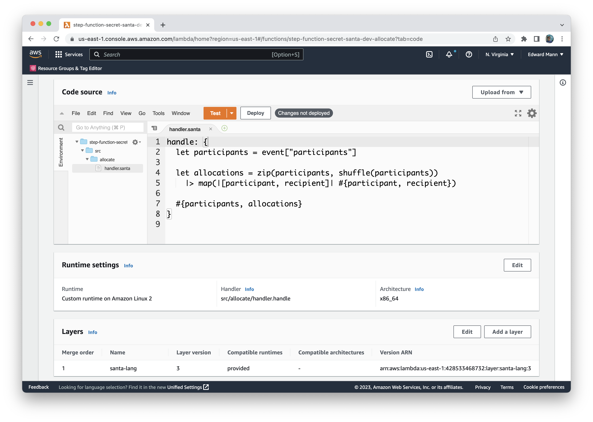
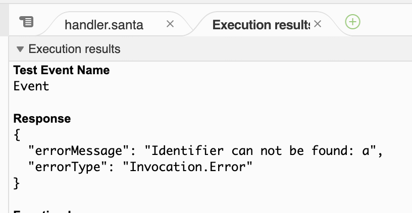

Lambda


As an exploration into AWS Lambda and how custom runtimes are built, I decided to provide access to the core language via the AWS Lambda platform. This runtime provides the user with the ability to handle a given Lambda request using behaviour defined in santa-lang. Both Comet and Prancer have a Lambda runtime available. This does not expose the Advent of Code runner, and is only primarily concerned with exposing the core language functionality.
Release (Comet)
| Platform | Release |
|---|---|
| provided.al2 | santa-lang-comet-lambda-0.0.10.zip |
Note: Prancer's Lambda runtime can be accessed via the GitHub repository.
Lifecycle
Both the Lambda request event and context are supplied to the handler section expression in the form of variables, event and context accordingly.
The Lambda runtime request/response is implicitly mapped to the languages type system.
The handler itself, is resolved based on the filename and section expression label you wish to invoke.
For example, fibonacci.handle would be resolved to the source file fibonacci.santa, and within there the defined handle section.
The resolved handler is then tasked with performing the desired behaviour, and returning either a String or structured Dictionary result (dependent on the desired Lambda integration).
In a similar manor to other Lambda runtimes (i.e. Node), the handler section is the the only part that is evaluated upon each request. Other computation put outside this is shared between requests, hence, any expensive work you wish to carry out up front upon cold start can be placed here. However, mutation should not be relied upon due to the un-determinate nature of when a warm/cold Lambda will be used.

External Functions
The Lambda runtime provides two specific functions, these are:
puts
puts(..value)Prints the supplied values (using their display format) to stdout.
puts("Hello", [1, 2.5, true])read
read(path)Reads the contents of the given path into a String. The path can either be:
- A local directory path, absolute or relative to the source file (within the packaged Lambda artifact).
- Based on a
http(s)schema being defined; a web URL location.
read("input.txt")read("https://www.example.com/input.txt")Errors
The Lambda runtime follows the error response format laid out in the API specification.
| Type | Reason |
|---|---|
| Runtime.HandlerNotFound | Handler source file/section is not found |
| Runtime.InitialisationFailed | Unable to parse/evaluate the source file to retrieve the handler section |
| Runtime.EnvNotFound | Required enviornment variable (_HANDLER, LAMBDA_TASK_ROOT) is not present |
| Invocation.Error | An error occurred during execution of the handler within a Lambda request |

Example
Below is an example which documents the use of a handler (with shared function):
let fibonacci = |n| {
let recur = |x, y, n| {
if n > 0 { return recur(y, x + y, n - 1) } else { x }
};
recur(0, 1, n);
};
handle: {
let number = event["number"];
puts("Requested the " + number + " number in the fibonacci sequence");
#{"result": fibonacci(number)};
}